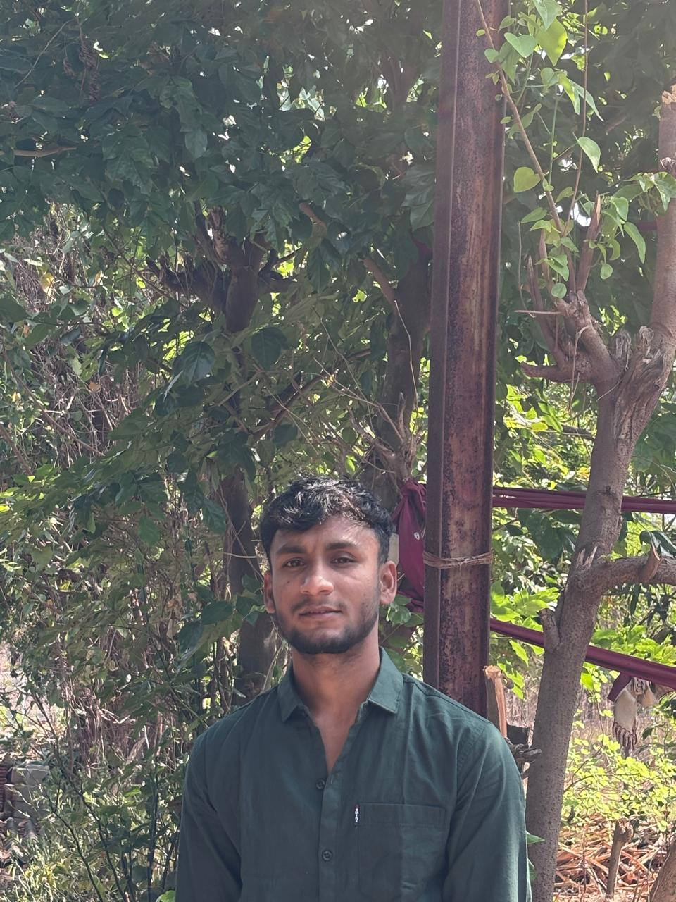

Handstand Story
Longer training edit shaped around progression, movement and visual rhythm.
I'm Tanmay Jitendra Jadhav — a B.Tech graduate and video editor focused on short-form content, fitness edits and social storytelling.
CUT • SYNC • CREATE ✦

CREATIVEI turn raw clips into clean, energetic stories that are made for the way people watch today.
My main focus is social-first video: Instagram Reels, YouTube Shorts and fitness/lifestyle content. I enjoy finding the strongest moments, building rhythm and using sound, text and movement without making the edit feel overloaded.
I'm comfortable working from raw footage to final export and adapting the style to the creator, audience and platform.
Six real edits from my current work. Click play to watch them directly.
Longer training edit shaped around progression, movement and visual rhythm.
Skill-focused fitness edit with movement, timing and punchy pacing.
Motivational edit built around training intensity and message-driven text.
Personal-style short using monochrome visuals, text and emotional pacing.
Emotion-led social edit with direct-to-camera storytelling.
Movement-focused fitness short with a bold visual treatment.
Focused on practical editing that keeps the story clear and the viewer engaged.
Engineering graduate • Maharashtra, India
Information technology 2025.Pick the strongest moments and define the story.
Cut, pace, sync music and build movement.
Refine sound, color, captions and final details.
Let's turn it into something people want to watch.